El analizador léxico es también llamado escaner, su función es reconocer una cadena de caracteres para identificar las palabras del lenguaje en estudio. La forma de ir reconociendo el carácter que forma a la palabra, se hace acoplando la cadena de caracteres en estudio a una gramática por medio de un autómata. Al final el autómata reconoce si la cadena de caracteres es una palabra válida. Las palabras que debe reconocer el escaner, son: los números, los identificadores, las palabras reservadas, los operadores y los delimitadores.
Definición de las clases léxicas por medio de expresiones regulares.
Todo lenguaje de programación se expresa por medio de cinco tokens, los cuales están agrupados en clases léxicas. Las clases léxicas son los tipos de palabras que se usan en programación, tales son: los números, los identificadores, las palabras reservadas, los operadores y los delimitadores. Estas clases léxicas, también llamadas tokens, se pueden expresar por medio de expresiones regulares.
Expresiones regulares
Todo lenguaje tiene tipos de palabras que ayudan a expresar las ideas. El lenguaje de programación también tiene tipos de palabras, que permiten expresar las ideas por medio de algoritmos. Los tipos de palabras que tiene cada lenguaje de programación se pueden clasificar, en: números, identificadores, palabras clave, operadores y delimitadores.
Se muestra en el siguiente listado ejemplos de tokens:
| 1 | Números: 1, 2, 3, 4, 0.5, 0.6, 0.7, etc. |
| 2 | Identificadores: a, b, c, d, a1, b2, A, A1, etc. |
| 3 | Palabras clave: int, float, main, new, etc. |
| 4 | Operadores: +, -, *, /, etc. |
| 5 | Delimitadores: , , [, ], etc. |
Clases léxicas
El término letra y carácter se usará como sinónimo de sı́mbolo para denotar un elemento de un alfabeto. Si se pone una secuencia de sı́mbolos lado a lado, se tiene una cadena de sı́mbolos. Por ejemplo, 01011 es una cadena del alfabeto binario {0, 1 }. El término sentencia y palabra son frecuentemente usadas como sinónimos de cadena [?] .
Se formaliza la idea de una gramática y cómo se usa. Para este propósito, sea V T un conjunto finito de sı́mbolos no vacı́o llamado alfabeto terminal. Los sı́mbolos en V T se llaman sı́mbolos terminales. El metalenguaje que se usa para generar cadenas en el lenguaje se supone que contiene un conjunto de clases sintácticas o variables llamadas sı́mbolos no terminales. El conjunto de sı́mbolos no terminales es denotado por V N y los elementos de V N se utilizan para definir la sintaxis (estructura) del lenguaje. Además, se supone que los conjuntos V N y V T son disjuntos [7].
DEFINICIÓN 1 (Vocabulario.) Es el conjunto V N ∪ V T que consiste en sı́mbolos no terminales y terminales [7].
DEFINICIÓN 2 (Lenguaje.) Es un conjunto de cadenas de longitud finita sobre algún alfabeto finito Σ [?] .
La expresión regular se define como la representación de las palabras por medio de cadenas de sı́mbolos, donde se utiliza la notación algebraica, la cual es reducida y fácil de asimilar. Esta representación se hace por medio de tres operaciones algebraicas de los sı́mbolos: la concatenación, la concatenación de los caracteres de cero a más veces (cerradura) y la alternativa.
DEFINICIÓN 3 (Conjunto regular.) Sea Σ un alfabeto finito. Un conjunto regular es recursivo sobre el alfabeto Σ de la siguiente manera:
| 1 | Φ es una conjunto regular sobre Σ. | ||||||
| 2 | {e} es una conjunto regular sobre Σ. | ||||||
| 3 | {a} es una conjunto regular sobre Σ. | ||||||
| 4 | Si P y Q son conjuntos regulares sobre Σ, entonces:
| ||||||
| 5 | Nada también es un conjunto regular. |
DEFINICIÓN 4 (Expresión regular.) Sea Σ un alfabeto finito. Una expresión regular es una definición recursiva, como se presenta en el siguiente listado:
| 1 | Φ es una expresión regular que denota el conjunto regular {Φ}. | ||||||
| 2 | e es una expresión regular que denota el conjunto regular {e}. | ||||||
| 3 | a ∈ Σ es una expresión regular que denota el conjunto regular {a}. | ||||||
| 4 | Si p y q son expresiones regulares que denota el conjunto
regular P y Q respectivamente, entonces :
| ||||||
| 5 | Nada también es una expresión regular. |
Las operaciones básicas de las expresiones regulares
Las operaciones básicas de las expresiones regulares, son: la concatenación, la alternativa y la cerradura. Con estas operaciones se forma cualquier expresión regular.
La concatenación
La concatenación es la consecución de sı́mbolos, uno después de otro. Ası́ que la concatenación de los sı́mbolos a y b se expresa, como:
ab
Sean R y S dos cadenas de sı́mbolos, la concatenación de las dos cadenas se denota como: RS. Se define por medio de la notación de conjuntos, como a continuación se muestra: {xy|x ∈ R ∧ Y ∈ S}. Un solo sı́mbolo es por si solo una expresión regular, ya que es la concatenación del sı́mbolo con la cadena vacı́a una o más veces. Sea la representación de la cadena vacı́a. El sı́mbolo a, se expresa como la concatenación de la cadena vacı́a una o más veces con el sı́mbolo, de la siguiente manera:
a = aε = aε ε = aε ε ε · · ·
Por lo que, una cadena con un sólo sı́mbolo, es de por sı́, una expresión regular. Reafirmando: a, b, ε, son expresiones regulares.
La alternativa
Cuando se quiere reconocer un sı́mbolo u otro sı́mbolo, la notación algebraica que lo determina, es la siguiente:
Esto quiere decir que se lee a o se lee b. Sean R y S dos cadenas de sı́mbolos, la alternativa de dos cadenas se define como {x|x ∈ R ∨ x ∈ S}. Su representación, es:
a|b
Las cerraduras
La concatenación de sı́mbolos cero o más veces hasta el infinito se hace por medio de las cerraduras de Kleene y la concatenación de una o más veces hasta el infinito se hace por medio de la cerradura positiva. La cerradura de Kleene o transitiva se representa de la siguiente manera:
La cerradura de kleene
Se representa por medio de la concatenación que se formaliza con la siguiente expresión:∪i = 0∞ ai = a*
La cerradura positiva
También se representa por medio de la concatenación que se formaliza con la siguiente expresión:
∪i = 1∞ ai = a+
Determinación de Tokens de un fragmento de código
Ası́ que observemos un fragmento de código en un lenguaje de programación. Por ejemplo en el lenguaje C++ o en Java:
Listado 1: Fragmento de código Java.
Public class MinTest{
public static void main ( string [ ] args ) {
int a =3;
int b=7;
System . out . println ( min ( a , b ) ) ;
}
{
return x mayor que y ? x : y ;
}
}
Del código en Java del listado 1 se extraen los tokens, tales como las palabras reservadas: int, return, public, estatic, etc. Los identificadores: a, b, x, etc. Los números, 3, 7, etc. Los operadores: <, ?. Los delimitadores: (, ), ;, etc.
Se muestran ejemplos de expresiones regulares en la siguiente lista:
| 1 | Números: 1, 2, 3, 4, 0.5, 0.6, 0.7, etc. |
| 2 | Identificadores: a, b, c, d, a1, b2, A, A1, etc. |
| 3 | Palabras clave: int, float, main, new, etc. |
| 4 | Operadores: +, -, *, /, etc. |
| 5 | Delimitadores: , , [, ], etc. |
Análisis Léxico
Cuando el compilador analiza un programa escrito en un lenguaje de alto nivel. El primer paso es reconocer las palabras contenidas en el programa, de acuerdo a las clases léxicas [3]. Las palabras se van leyendo sı́mbolo por sı́mbolo y al agrupar todos los caracteres, se forman las palabras, las cuales se comparan con un conjunto de reglas, que se representan por medio de expresiones regulares o por medio de gramáticas. Si la palabra es válida, de acuerdo al lenguaje de programación usado acoplado con las reglas de una expresión regular o una gramática, el escaner asigna una clase léxica o categorı́a sintáctica, o la reconoce como parte del programa.
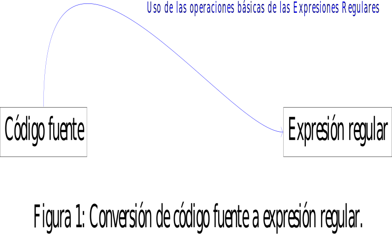De esta manera se sabe si en el programa las palabras estan bien escritas Existen herramientas automáticas para generar escaners. El proceso de la herramienta es una descripción matemática de la sintaxis léxica del lenguaje. Para construir los escaners artesanales y los escaneres generados, se aplican las mismas técnicas en ambos. Los compiladores comerciales y los compiladores de código abierto usan escaneres artesanales [5]. Los escaners artesanales son más rápidos que los escaners generados, porque la implementación optimiza una porción del encabezado que no se puede evitar en un escaner generado. El modelo de reconocedor, es un programa que identifica las palabras de una cadena de caracteres. Reconocedor de palabras, la explicación más simple de un algoritmo para reconocer palabras es reconocer carácter por carácter. Por ejemplo reconocer la palabra clave new. Considerando la rutina SiguienteCaracter() que regresa el siguiente carácter, se implementa como sigue:
El Algoritmo 2, es la función que hace la lectura de los símbolos que forman la palabra:
Creación de AFN por medio de la construcción de Thompson.
Las clases léxicas, se representan con las siguientes operaciones básicas, las cuales son: la concatenación, la alternativa, la cerradura de Kleene y la cerradura positiva. A partir de estas operaciones básicas se construye el autómata AFN, que va a reconocer a los tokens que forman el lenguaje de programación.
Autómata finito no determinı́stico (AFN).
El autómata finito no determinista se abrevia como AFN. Este autómata se define como aquel que tiene transiciones con la cadena vacı́a ε y que tiene transiciones de un estado con el mismo sı́mbolo a dos estados diferentes. Y el número de los estados que componen al AFN son finitos.
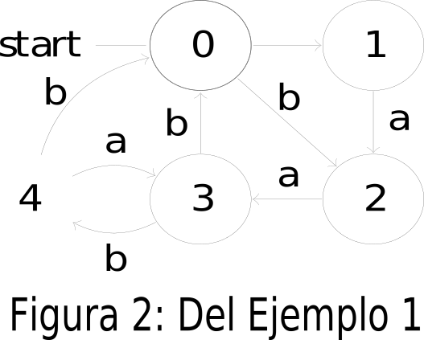El autómata de la figura 2, tiene una transición del estado 0 al estado 1 con la cadena vacı́a ε. Además tiene dos transiciones con el sı́mbolo b del estado 3 a los estados 0 y 4. Por lo que este autómata es AFN.
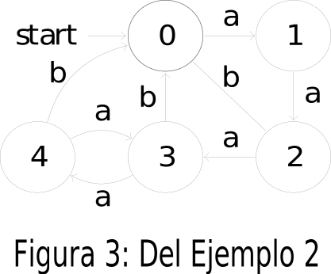Construcción de Thompson.
Tomando en cuenta las operaciones básicas de las expresiones regulares, se plantea la construcción del AFN: para la concatenación ab, se representa por el grafo de la figura 4 [5].
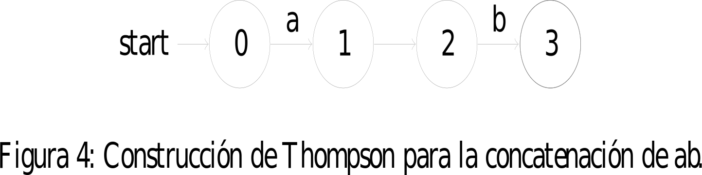La construcción de thompson para la cerradura de Kleene, en notación algebraica es a∗ , el grafo es el de la figura 5 [5]:
La construcción de thompson para la cerradura de positiva, en notación algebraica es a+ , el grafo es el de la figura 6 [4]:
La construcción de Thompson para la alternativa, en notación algebraica es a|b, el grafo es el de la figura 7 [5]:
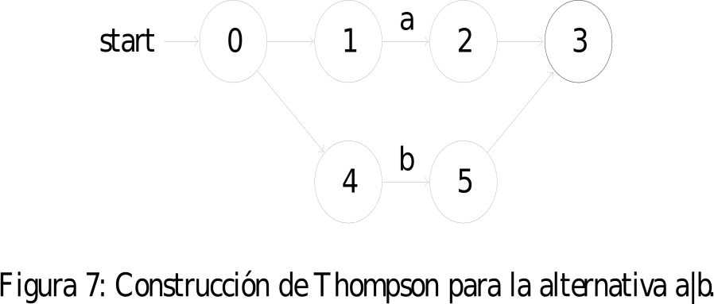
EJEMPLO 1 (Construcción de Thompson.) La
entrada del analizador léxico es el código fuente y la salida son los tokens
reconocidos en el código fuente de la entrada. Ası́ que para
reconocer los tokens, se hace de dos formas: por medio de las
expresiones regulares o por medio de los autómatas.
Si tenemos la palabra reservada if, la expresión regular de esta
palabra reservada es Itálica{if}.
El AFN de la expresión regular Itálica{if}, es el que se muestra en la figura 11 , el cuál representa la concatenación del sı́mbolo i con el sı́mbolo f.
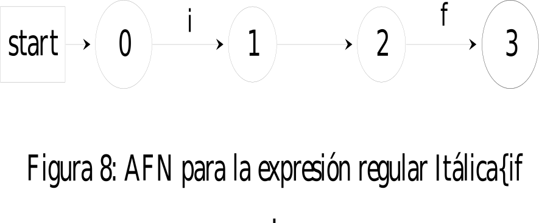
EJEMPLO 2 (Construcción de Thompson.) Ahora
la
entrada del analizador léxico es una alternativa y la salida son
los tokens reconocidos en el código fuente de la entrada. Ası́ que
para reconocer los tokens, se hace de dos formas: por medio de
las expresiones regulares o por medio de los autómatas.
Si tenemos la expresión regular Itálica{(a | b)}.
Su AFN es el que se muestra en la figura 9 .
EJEMPLO 3 (Construcción de Thompson.) Ahora
entrada del analizador léxico es un identificador.
La expresión regular del identificador es Itálica{l(l|d) ∗ }.
Su AFN es el que se muestra en la figura 10 .

Conversión de AFN a AFD
Existe un AFD equivalente a un AFN con transiciones ε, el que se puede obtener de la siguiente manera: Sea M=(Q, Σ, δ, q0 , F) un AFN con transiciones ε. Un AFD equivalente a un AFN será como sigue: M’=(Q1 , Σ, δ1 , q1 , F1 ), donde Q1 es subconjunto de 2 Q , lo que quiere decir que cada estado de un AFD corresponde a un subconjunto de Q. Para cada subconjunto de estados de M habrá un solo estado de M’. Donde M’ simulará el comportamiento del autómata M, haciendo transiciones entre sus estados de la forma que M hace las transiciones entre sus subconjuntos.
DEFINICIÓN 5 (Cerradura-ε.) La cerradura-ε({S}) es el conjunto de todos los estados que reciben una transición con el carácter vacı́o ε, incluido el conjunto de estados {S} de donde salen las transiciones ε.
El primer estado q1 = cerradura-ε({q0 }), es el estado inicial del AFD. Se agregará q1 a Q1 , y luego se encuentra la transición de q1 de la siguiente manera: δ (q1 , a) = cerradura-ε (δ (representación del subconjunto q1 , a)). Si esta transición genera un nuevo subconjunto de Q, entonces este será agregado a Q1 ; y la siguiente transición de este se deberá encontrar, se continuará de esta manera hasta que no se pueda agregar un nuevo estado a Q1 . Después se identificará los estados del AFD que contengan al menos un esta- do que pertenezca al conjunto de estados F. Si la cerradura-ε({q0 }) no contiene un miembro de F y el conjunto de los estados del AFD constituye F1 , pero si la cerradura-ε({q0 }) contiene un miembro de F. De [3] la transformación de AFN a AFD por medio de subconjuntos, se hace de la siguiente manera. Aplicando los siguientes conceptos: Cerradura-ε({s}), es el conjunto de estados del AFN alcanzables desde el estado s del AFN con transiciones ε solamente. Cerradura-ε({T }), es el conjunto de estados del AFN alcanzables desde el estado s en el conjunto T con transiciones ε solamente; ∪ s∈T cerradura − ε(s). mover(T , a), es el conjunto de estados del AFN a los cuales hay una transición con un sı́mbolo de entrada a desde algún estado s en T . Se exploran los conjuntos de estados de N que pueden ver después las cadenas de entrada. Como base, antes de leer el primer sı́mbolo de entrada, N puede estar en cualquiera de los estados de la cerradura-ε({s0 }), donde s0 es el estado inicial. Se supone que N puede estar en el conjunto de estados T después de leer la cadena de entrada x. Si hay un lectura a, entonces N puede inmediatamente ir a cualquiera de los estados mover(T, a). Sin embargo después de leer a este puede hacer algunas transiciones ε; ası́ que N podrı́a estar en algunos de los estados cerradura-ε((mover(T, a)) después de leer la entrada xa. Siguiendo estas ideas, la construcción del conjunto de estados D’s, D estados , y su función de transición D transicion se muestra en el siguiente algoritmo:
El estado inicial de D es cerradura-ε({s 0 }), y el estado de aceptación de D son todos los conjuntos de estados N’s que incluyen al menos un estado de aceptación N .
Algoritmo de subconjuntos.
La transformación de un AFN a un AFD se hace aplicando el algoritmo de subconjuntos, el cual comienza al aplicar cerradura-ε al primer estado del AFN. El concepto de cerradura, es: al estado al que se le aplica la cerradura-ε se incluye en el conjunto y además todos los estados que se accedan por medio de un transición ε a partir del estado al que se le aplica la cerradura-ε. Se van formando subconjuntos de estados, los cuales también se van formado del movimiento de todos los caracteres que acepta el AFN desde el estado al que se obtuvo, ası́ si los subconjuntos de estados son diferentes se marcan como un estado nuevo para el AFD.
DEFINICIÓN 6 (Movimiento(Estado, Sı́mbolo).) Es el movimiento de un estado marcado como Estado con cada sı́mbolo del alfabeto Σ hacia otro estado. El movimiento se puede expresar también como mov(estado, sı́mbolo).
Observar el siguiente ejemplo:
EJEMPLO 4 (Conversión de AFN a AFD.) La siguiente expresión regular Itálica{(a|b) ∗ ba} transformarla en AFN, aplicando la construcción de Thompson. Para después aplicar el algoritmo de subconjuntos y ası́ transformar el AFN a AFD.
El AFN que se obteniene aplicando los patrones de la construcción de Thompson, es el que aparece en la figura 11 :
Para transformar el AFN de la figura 11 a AFD, se aplica el algoritmo de subconjuntos. Se comienza aplicando la operación de cerr-ε al estado 0, este primer subconjunto de estados será el primer estado del AFD, el que se etiquetará como S0 :
cerr−ε({0}) = {0, 1, 2, 4, 7} = S0
Para obtener el estado S1 se aplica la operación de movimiento por todo el alfabeto Σ = {a, b}, también a cada movimiento se le aplica la operación de cerr-ε, como se muestra a continuación:
mov(S0 , a) = {5}
Se le aplica la operación de cerr-ε al movimiento de S0 con el sı́mbolo a, por lo que se obtiene:
cerr − ε(mov(S0 , a)) = {1, 2, 4, 5, 6, 7} = S1
Se hacen las siguientes operaciones:
mov(S0 , b) = {3, 8}
cerr − ε(mov(S0 , b)) = {1, 2, 3, 4, 6, 7, 8, 9} = S2
Se hacen las siguientes operaciones:
mov(S1 , a) = {5}
cerr − ε(mov(S1 , a)) = S1
Se hacen las siguientes operaciones:
mov(S1 , b) = {3, 8}
cerr − ε(mov(S1 , b)) = S2Se hacen las siguientes operaciones:
mov(S0 , a) = {5}
mov(S2 , a) = {5, 10} cerr − ε(mov(S2 , a)) = {1, 2, 4, 5, 6, 7, 10} = S3Se hacen las siguientes operaciones:
mov(S0 , a) = {5}
mov(S2 , b) = {3, 8} cerr − ε(mov(S2 , b)) = S2Se hacen las siguientes operaciones:
mov(S3 , a) = {5}
cerr − ε(mov(S3 , a)) = S1
Se hacen las siguientes operaciones:
mov(S3 , b) = {3, 8}
cerr − ε(mov(S3 , b)) = S2
El siguiente paso es obtener de las operaciones anteriores el AFD, como se muestra en la figura 12 .
Creación de un AFD a partir de una expresión regular
El proceso de construcción de un AFD de una expresión regular, es: aplicar la construcción de Thompson a la expresión regular para obtener un autómata AFN, para después aplicar el algoritmo de subconjuntos al AFN para obtener un AFD no mı́nimo, como se muestra en la figura 13.
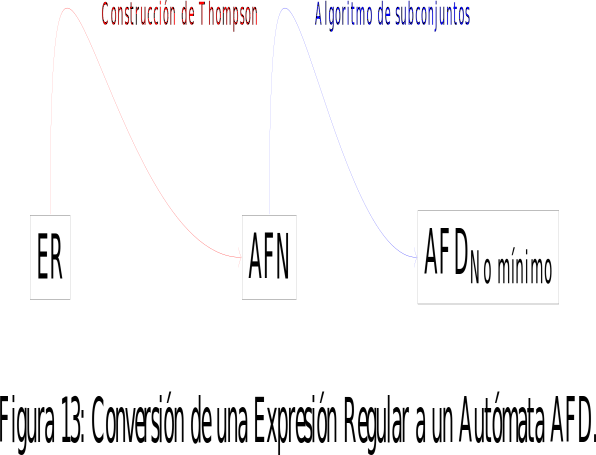[Transformación de expresión regular a AFD.] Otro método es usar cuatro funciones: anulable, primerapos, ultimapos y siguientepos, haciendo recorridos sobre un árbol. Por último se construye el AFD a partir de siguientepos. Las funciones anulable, primerapos y ultimapos se definen sobre los nodos del árbol sintáctico y se usan para calcular siguientepos, que esta definida en el conjunto de posiciones [3].
DEFINICIÓN 7 (Función siguientepos().) Es el conjunto de posiciones j tales que hay alguna cadena de entrada cd tal que i corresponde a la aparición de c y j a la aparición de d [3] .
DEFINICIÓN 8 (Función primerapos().) La que propor- ciona el conjunto de posiciones que pueden concordar con el pri- mer sı́mbolo de una cadena generada por la subexpresión con raı́z en n [3] .
DEFINICIÓN 9 (Función últimapos().) La que proporcio- na el conjunto de posiciones que pueden concordar con el último sı́mbolo en esa cadena [3] .
DEFINICIÓN 10 (Función anulable().) Es necesario cono- cer qué nodos son las raı́ces de las subexpresiones que generan lenguajes que incluyen la cadena vacı́a. A dichos nodos se les de- nomina anulables, y la función anulable(n) se define como verda- dera si el nodo n es anulable, y falso en caso contrario [3] .
DEFINICIÓN 11 (Construcción de un AFD de una expresión regular.) Entrada: Una expresión regular r. Salida: Un AFD D que reconoce a L(r). Método:
| 1 | Constrúyase un árbol sintáctico para la expresión regular aumentada (r)#, dónde # es un marcador de final único que se añade a (r). |
| 2 | Constrúyanse las funciones anulable(), primerapos(), útimapos() y siguientepos() haciendo recorridos en profundidad en el árbol T. |
| 3 | Contrúyanse los estadosD, el conjunto de estados D, y tranD, la tabla de transiciones para D. Los estados dentro de estadosD son conjuntos de posiciones; al principio, cada estado esta “no marcado”, y un estado se convierte en “marcado” justo antes de considerar sus transiciones de salida. El estado de inicio de D es primerapos(raı́z), y los estados de aceptación son todos los que contienen la posición asociada con el marcador de final #. [3] . |
Listing 2: Construcción de la tabla de transiciones del estado D.
al principio , el único estado no marcado en estadosD es
primerapos ( raiz ) , donde raiz es la raiz del arbol de
sintaxis para ( r )#;
while hay un estado sin marcar T en estadosD do begin
marcar T ;
for cada simbolo de entrada a do begin
se a U el conjunto de posicion es que estan en
siguientepos ( p ) para alguna posicion p en T,
tal
que el simbolo en la posicion p es a ;
if U no esta vacio y no esta en estadosD then
aniadir U como estado no marcado a estadosD ;
tranD [ T, a ] := U
end
end
Ejercicio.
Convertir la expresión regular aumentada Itálica { (a|b) ∗ abb# } en un AFD, utilizando las funciones primerapos, últimapos, siguientepos. Lo primero es colocar en un árbol sintáctico la expresión regular. Existen los nodos: nodo- ast que es el nodo para una cerradura de Kleene, el nodo-cat que es el nodo para la concatenación, el nodo-o que es el nodo para la alternativa y también el nodo-pos que es el nodo para la cerradura positiva.
En la expresión regular Itálica{ (a|b) ∗ abb } se enumeran los sı́mbolos del alfabeto incluido el sı́mbolo #, como se muestra en el cuadro 2 :
En el árbol se marcan los nodos en la parte izquierda del nodo se colocan los primeros y en la parte derecha del nodo se colocan los últimos.
Para calcular la función siguientepos se aplican las siguientes dos reglas:
| 1 | Si n es un nodo-cat con hijo izquierdo c1 e hijo derecho c2 , ei es una posición dentro de últimapos(c1 ), entonces todas las posiciones de primerapos(c2 ) están en siguientepos(i). |
| 2 | Si n es un nodo-ast, e i es una posición dentro de últimapos((n), entonces todas las posiciones de primerapos(n) están en siguientepos(i). |
En el cuadro ?? se listan los conjuntos primeros y últimos:
Se obtiene el autómata AFD de la figura 2.
Minimización de estados de un AFD
Después de transformar un autómata AFN a AFD, es conveniente que el AFD tenga el mı́nimo de estados con la finalidad de que cuando se programe el AFD sea con un número de estados pequeño. Para minimizar un AFD existen algoritmos de Minimización, los cuales, son: El algoritmo de Hopcroft [5], el algoritmo de consistencia [4].
El algoritmo de Hopcroft.
Se forma un conjunto de particiones P del autómata a minimizar. La construcción del conjunto de particiones se basa en el principio de que un estado se comporta de la misma manera que otro estado, si tienen el mismo comportamiento ante la misma cadena de entrada, entonces los estados son equivalentes. Ası́ es, se expresa de la siguiente manera. Ante la entrada de la cadena de ca- racteres abc, el comportamiento de un estado p → q es el mismo que el de otro estado p1 → q1 , entonces los estados q y q1 son equivalentes. Representado gráficamente:
p −−−−−−−−−−−→ q
Se tiene que el estado q 1 tiene el mismo comportamiento que q, ante la misma cadena de entrada, lo que se representa de la siguiente forma:
p1 −−−−−−−−−−−→ q1
El algoritmo de consistencia.
La manera de minimizar el número de estados es determinar las salidas de cada uno de los estados basados en que hacen de acuerdo a la cadena de caracteres que aceptan los estados. Dado un AFD D que acepta el alfabeto Σ con estado S donde F ⊆ S es el conjunto de los estados de aceptación, construimos un AFD D 0 donde cada estado es un grupo de estados de D. Los grupos en el AFD mı́nimo son consistentes: para cada par de estados s1 , s2 en el mismo grupo G y cualquier sı́mbolo c, mover(s1 , c) esta en el mismo grupo G1 como mover(s2 , c) o ambos son indefinidos. En otras palabras, no podemos decir s1 y s2 aparte por buscar sus tradiciones. Se forman dos grupos de estados: los estados finales y los estados no finales. Se verifica la consistencia de los grupos formados. Si no son consistentes se divide el grupo, tomando los grupos de estados que si sean consistentes y se reemplaza el grupo que no fué consistente por los nuevos grupos formados. Esto se repite hasta que todos los grupos sean consistentes.
Ejemplo
Se tiene el siguiente autómata AFD no mı́nimo: con el conjunto de estados S = {0, 1, 2, 3, 4}, donde la tabla de transiciones se representa en el cuadro 3:
El autómata AFD no mı́nimo de la tabla de transiciones 3, esta representado en la figura 16 : los estados finales F = {0} y el conjunto de los estados no finales G = {1, 2, 3, 4}.
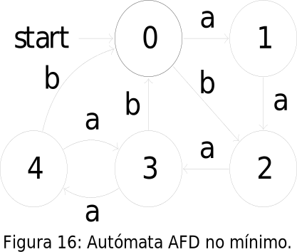Para minimizar el autómata de la figura 16, se aplica el algoritmo de con- sistencia a los dos grupos formados: el grupo de estados no finales G y el grupo de estados finales F . Se presentan los grupos G y F en forma de tabla, como se muestra en el cuadro 4 y en el cuadro 5, respectivamente:

Al aplicar la consistencia al grupo G representado en el cuadro 4 , se determina que todos los estados son inconsistentes, pues tienen diferentes transiciones. Por lo que cada estado se divide en un grupo diferente, de manera que se obtienen cuatro grupos. Al aplicar la consistencia al grupo F representado en el cuadro 5 , y ya que tiene un sólo estado se considera que el grupo F es consistente, por lo que se obtiene un grupo.
En total se obtuvieron cinco grupos consistentes y ya que el AFD no mı́nimo tiene cinco estados. Entonces, se concluye que el AFD no mı́nimo es el AFD mı́nimo.
Lista de ejercicios| 1 | Dado el autómata AFD No mı́nimo de la figura 17, minimizarlo aplicando los algoritmos de minimización:Figura 17. |
| 2 | Para el AF D N o mı́nimo de la figura 18, minimizarlo aplicando los algoritmos de minimización:Figura 18. |
Construcción de analizadores léxicos definidos por medio de expresiones regulares
Para construir un analizador léxico se parte de la expresión regular, la cual se transforma en autómata AFN por medio de la construcción de Thompson. Después, el autómata AFN se convierte en autómata AFD utilizando el algoritmo de subconjuntos, posteriormente se minimiza el número de estados, utilizando un algoritmo de minimización. Cuando ya se tiene el AFD mı́nimo, este se programa en un lenguaje de programación de alto nivel, ya sea C++, Java, etc. La programación del AFD mı́nimo, es la implementación del analizador léxico.
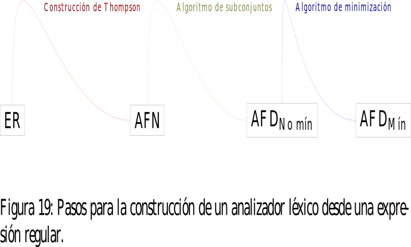Ejemplo
EJEMPLO 5 (Construcción de un analizador léxico.) A partir de la siguiente expresión regular construir un analizador léxico: la expresión regular (a|b) ∗ ba, se transforma en AFN aplicando la construcción de Thompson para tres concatenaciones, la primera concatenación es una cerradura de Kleene y dentro de la cerradura de Kleene una alternativa, por lo que se obtiene el siguiente autómata:

El siguiente paso es convertir el autómata AFN en un autómata AFD aplicando el algoritmo de subconjuntos. De donde se obtiene el el autómata AFD no mı́nimo, que se muestra en seguida:
| cerradura-ε({0}) = | { 0, 1, 2, 4, 7 } = S0 |
| cerradura-ε(mov(S0 ,a)) = cerradura-ε({ 3 }) = | { 3, 6, 7, 1, 2, 4 } = S1 |
| cerradura-ε(mov(S0 ,b)) = cerradura-ε({ 5 }) = | { 5, 6, 7, 1, 2, 4 } = S2 |
| cerradura-ε(mov(S1 ,a)) = cerradura-ε({ 3 }) = | S1 |
| cerradura-ε(mov(S1 ,b)) = cerradura-ε({ 8, 5 }) = | { 8, 5, 6, 7, 1, 2, 4 } = S3 |
| cerradura-ε(mov(S2 ,a)) = cerradura-ε({ 3 }) = | S1 |
| cerradura-ε(mov(S2 ,b)) = cerradura-ε({ 8, 5 }) = | S3 |
| cerradura-ε(mov(S3 ,a)) = cerradura-ε({ 9, 3 }) = | { 9, 3, 6, 7, 1, 2, 4 } = S4 |
| cerradura-ε(mov(S3 ,b)) = cerradura-ε({ 8, 5 }) = | S3 |
| cerradura-ε(mov(S4 ,a)) = cerradura-ε({ 3 }) = | S1 |
| cerradura-ε(mov(S4 ,b)) = cerradura-ε({ 8, 5 }) = | S3 |
De las operaciones de cerradura se obtiene el AFD:
Se aplica el algoritmo de minimización del cual se obtiene el autómata AFD mı́nimo: Se forma el grupo de estados no finales G0 = {S0, S1, S2 , S3 } y el grupo de estados finales G1 = {S4 }. El grupo G1 por tener un sólo estado es de por si consistente. Al grupo G0 se le aplica la consistencia y este se divide en dos grupos: G2 = {S0 , S1 , S2 } y G3 = {S3 }, ası́ que el autómata AFD mı́nimo se forma como en la figura 22 .
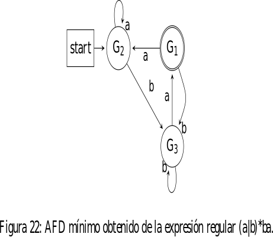EJEMPLO 6 (Construcción de un analizador léxico.) A partir de la siguiente expresión regular construir un analizador léxico: la expresión regular (a|b) ∗ abb, se transforma en AFN aplicando la construcción de Thompson para cuatro concatenaciones, la primera concatenación es una cerradura de Kleene y dentro de la cerradura de Kleene una alternativa, por lo que se obtiene el siguiente autómata:
El autómata AFD de la figura 24 se obtiene aplicando el algoritmo de subconjuntos al autómata AFN de la figura 23 .
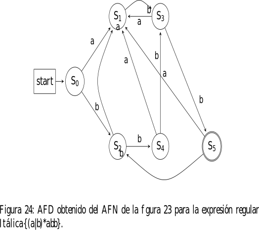EJEMPLO 7 (Construcción de un analizador léxico.) A partir de la siguiente expresión regular construir un analizador léxico: la expresión regular (a|b) ∗ bba, se transforma en AFN aplicando la construcción de Thompson para cuatro concatenaciones, la primera concatenación es una cerradura de Kleene y dentro de la cerradura de Kleene una alternativa, por lo que se obtiene el siguiente autómata:
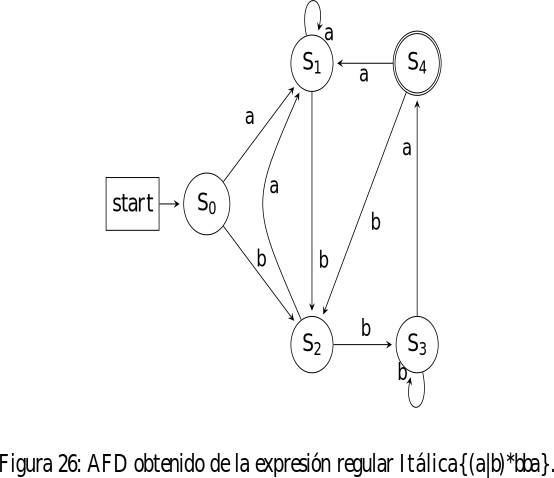Aplicando el algoritmo de minimización al AFD de la figura 26 , se obtiene el autómata AF D M de la figura 27 :
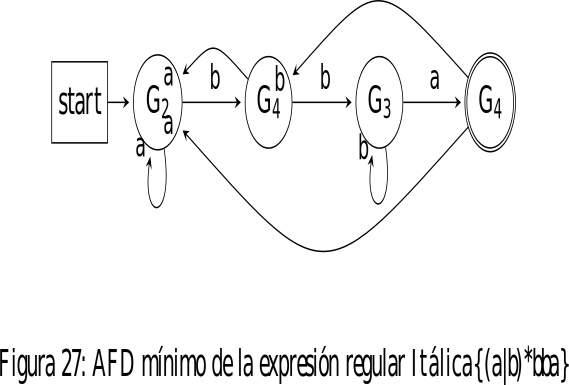Se debe construir la función siguiente(), que se muestra a continuación en el algoritmo :
Después de haber obtenido la tabla de transiciones del autómata AFD mı́nimo, se aplica el siguiente código para implementar el analizador léxico, escaner o reconocedor:
Lista de ejercicios
Dadas las siguientes expresiones regulares construir un analizador léxico:
| 1 | a∗ (a|b)aa |
| 2 | ((a|b)(a|bb))∗ |
| 3 | (ab|ac)∗ |
| 4 | (0|1)∗ 1100 1∗ |
| 5 | (01|10|00)∗ 11 |
Generadores de analizadores léxicos
Los generadores de analizadores léxicos hacen todo el proceso desde la introducción de la expresión regular, estos generan el autómata mı́nimo ya codificado. Las especificaciones en FLEX se hace de la siguiente forma:
Definiciones %% Reglas %% Código de usuario
En la siguiente tabla 6, se especifican las expresiones regulares en LEX:
| Expresión regular | Código |
|---|---|
| ER | CO |
| if | {return IF;} |
| [a − z][a − z0 − 9]∗ | {return ID;} |
| [0 − 9]+ | {return NUM;} |
| ([0 − 9] ”.”[0 − 9]∗)|([0 − 9]∗ ”.”[0 − 9]+ ) | {return REAL;} |
| (” − −”[a − z]∗ ””)|(””|””|” ̈”)+ | { /* do nothing */ } |
| {error();} |
El siguiente es un programa en LEX:
%{
/* Declaraciones de C: */
#include "tokens.h" /* definiciones de IF, ID, NUM, ... */
#include "errormsg.h"
union {int ival; string sval; double fval;} yylval;
int charPos=1;
#define ADJ (EM_tokPos=charPos, charPos+=yyleng)
%}
/* Definiciones de Lex: */
digits [0-9]+
%%
/* Expresiones Regulares y Acciones: */
if
{ADJ; return IF;}
[a-z][a-z0-9]*
ADJ; yylval.sval=String(yytext);
return ID;}
{digits}
{ADJ; yylval.ival=atoi(yytext);
return NUM;}
({digits}"."[0-9]*)|([0-9]*"."{digits})
{ADJ;
yylval.fval=atof(yytext);
return REAL;}
("--"[a-z]*"\n")|(" "|"\n"|"\t")+ {ADJ;}
.
{ADJ; EM_error("caracter ilegal");}